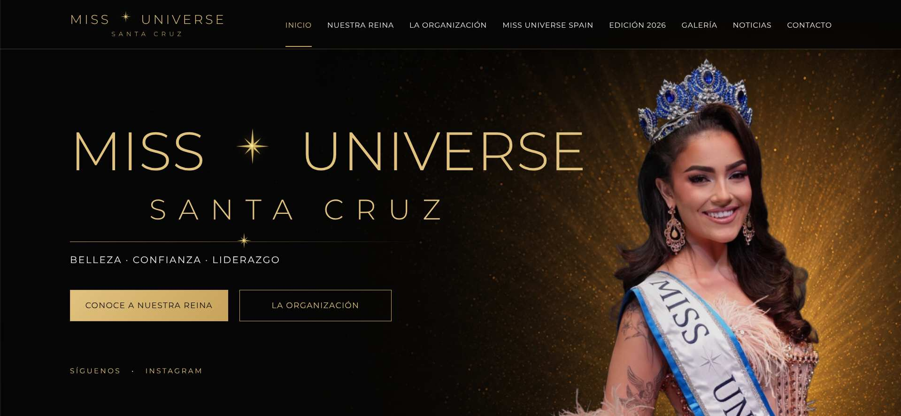
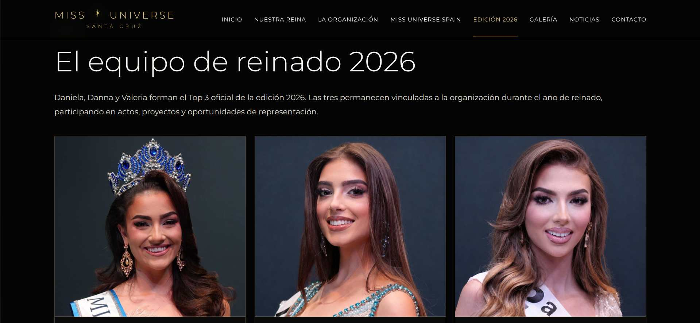
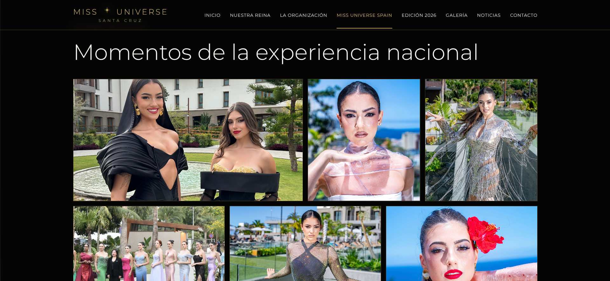
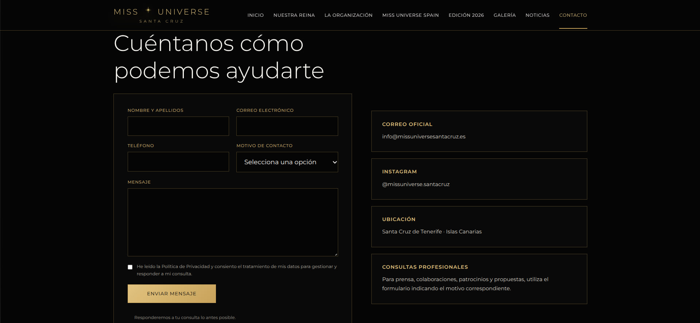

UNIVERSE
SANTA CRUZ
UNIVERSE
SANTA CRUZ
Miss Universe Santa Cruz continúa desarrollando su proyecto con la presentación de su nueva página web oficial, un espacio creado para acercar la organización al público y reunir en un mismo lugar toda la información relacionada con su actividad.
La nueva plataforma nace después de la celebración de la primera edición del certamen y supone un nuevo paso en la construcción de la identidad digital de Miss Universe Santa Cruz.

Un nuevo espacio para Miss Universe Santa Cruz
La nueva página web ha sido diseñada como el punto de encuentro digital de la organización.
A través de ella, el público puede conocer la historia de Miss Universe Santa Cruz, descubrir a sus representantes, revivir los momentos más importantes de la primera edición y seguir las novedades que marcarán las próximas etapas del proyecto.
La plataforma reúne información que hasta ahora se encontraba distribuida entre diferentes canales y permite ofrecer una visión más completa de la actividad de la organización.
Nuestra reina y el equipo de representación
Uno de los principales espacios de la nueva web está dedicado a Daniela Martínez Morales, primera Miss Universe Santa Cruz, cuya trayectoria puede conocerse a través de una página específica dedicada a su historia y a su año de representación.
La web también permite profundizar en la primera edición del certamen y en el equipo de reinado formado por Daniela Martínez Morales, Danna Hernández Cruz y Valeria Gorrín Samblas.
De esta manera, las protagonistas de esta primera etapa pasan a ocupar también un espacio permanente dentro de la historia digital de la organización.

La primera edición, siempre disponible
La gala celebrada en 2026 cuenta con su propio espacio dentro de la nueva plataforma.
Fotografías, resultados, protagonistas y diferentes momentos de la edición permiten reconstruir una noche que marcó el nacimiento oficial de Miss Universe Santa Cruz.
La web incorpora además una galería audiovisual pensada para conservar y mostrar algunos de los momentos que han definido esta primera etapa.
“La nueva web nace para conservar nuestra historia, compartir nuestro presente y construir el espacio digital desde el que contaremos todo lo que está por venir.”
Santa Cruz en el escenario nacional
La presencia de la organización en Miss Universe Spain 2026 también ocupa un espacio destacado dentro de la web.
La experiencia nacional de Daniela Martínez Morales y Danna Hernández Cruz, junto al recorrido desarrollado durante la concentración y la gala final, permite conectar la primera edición de Santa Cruz con el escenario nacional.
Esta sección amplía la historia de las representantes y muestra la continuidad de un proyecto que siguió generando oportunidades después de la gala provincial.

Noticias y actualidad oficial
La nueva sección de Noticias permitirá reunir comunicados, novedades, historias del reinado, participación nacional, eventos y futuras iniciativas de la organización.
El objetivo es crear un archivo que crezca junto a Miss Universe Santa Cruz y que permita consultar tanto la actualidad como los momentos que vayan formando parte de su historia.
Cada nueva etapa podrá quedar documentada dentro de un mismo espacio, facilitando el acceso a la información oficial.
Una vía directa de contacto
La web incorpora también un espacio de Contacto desde el que particulares, empresas, medios y futuras participantes pueden dirigirse directamente a la organización.
Colaboraciones, patrocinios, prensa, información general y participación en futuras ediciones disponen así de un canal más claro y organizado.

Una plataforma preparada para crecer
El lanzamiento de la web no representa únicamente un cambio de imagen digital.
Supone la creación de una plataforma preparada para crecer junto a la organización y acompañar las próximas ediciones, proyectos y oportunidades que se desarrollen alrededor de Miss Universe Santa Cruz.
A medida que el proyecto avance, nuevas historias, representantes, noticias y experiencias pasarán a formar parte de este archivo digital.
Un nuevo capítulo para la organización
La primera edición permitió escribir las primeras páginas de la historia de Miss Universe Santa Cruz. Ahora, esa historia cuenta también con un espacio propio desde el que seguir creciendo.
La nueva página web se convierte así en el punto de encuentro entre el pasado, el presente y los próximos capítulos de una organización que continúa construyendo su identidad.